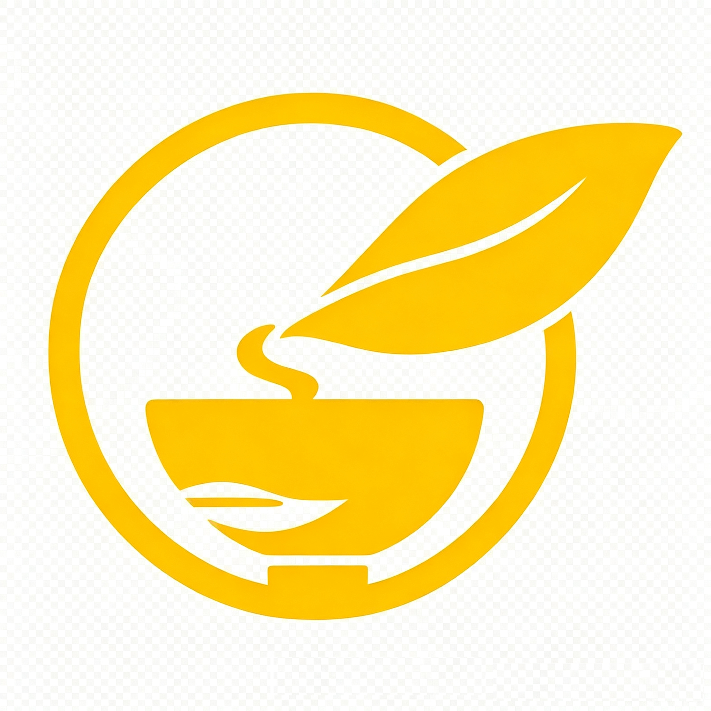

瑞吉外卖
REGGIE TAKEOUT
{{item.name}}
{{sub.name}}
{{item.name}}
返回
/
{{ crumb }}
搜索菜单
Ctrl K
{{ userInfo.name ? userInfo.name.charAt(0) : '管' }}
{{ userInfo.name }}
{{ it.name }}
{{ it.group }}
未找到匹配的页面